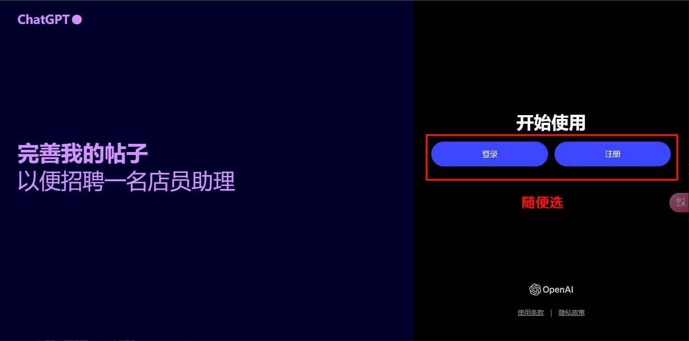

如何选号聊天
使用浏览器（推荐Microsoft Edge）进入网站，可以看到下面有非常多的带方框的数字，随便点进去一个即可。如果不知道该选哪个，就“一键抽奖”随机获取一个。
然后再下图输入好用户名即可, 别忘了还要过人机验证.
接着恭喜你成功掌握了本站的基础玩法
但是免费的Chat GPT账户对GPT-4的访问是有限的, 如果想要实现GPT-4自由, 就要将多个账号组成一个号池.
如何退出账号
如果到达OpenAI的限制之后会提醒你, 这时你就可以注销账户, 换用其他账户继续畅聊.
电脑版
手机版
这两个随便选, 反正都会跳到号池主页
特别卡, 有时还直接停止响应
如果 GPT 模型特别卡或者直接停止响应，可能有以下几个原因：
1. 网络问题：你的网络连接可能不稳定，导致数据传输中断或延迟。
2. 服务器负载：如果有很多用户同时使用 GPT 模型，服务器负载过高，可能会导致响应变慢或中断。
3. 输入内容复杂：如果你输入的内容特别长或复杂，处理时间可能会变长。
4. 系统维护或升级：后台系统可能正在进行维护或升级，影响了服务的稳定性。
5. 浏览器或设备问题：你的浏览器或设备可能有问题，比如内存不足、浏览器缓存问题等。
解决办法: 清除缓存或更换其他浏览器, 推荐Edge(真不是打广告). 再不行就开无痕
网站进不去, 黑屏
如果你遇到了这个情况, 那就极大概率是你的IP不干净导致的, 请关闭VPN或代理重新访问.